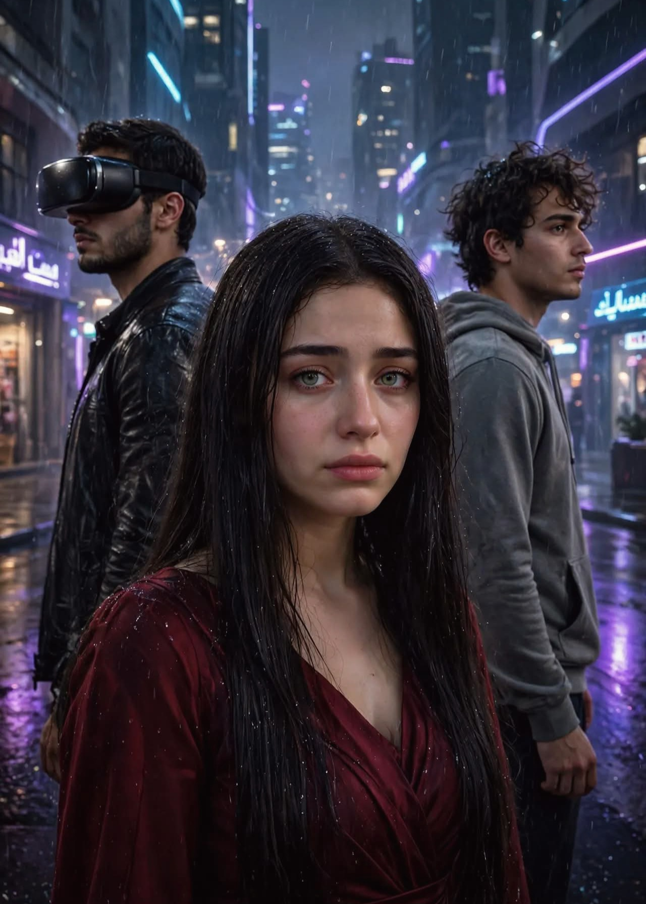

دراما | صداقة | تضحية
تأليف: محمد جمال
▶ العب اللعبةعمر وكريم، أصدقاء من 15 سنة، على سطح بيت في عمّان. بكرا عمر مسافر. بقرروا يفوتوا على لعبة NOVA عشان يضلوا صحاب. هناك بيلتقوا ببنت اسمها ليا...
الاثنين بيحبوا ليا بدون ما يعرفوا. بتبدا الغيرة، وأول خناقة بينهم من 15 سنة.
بيكتشفوا انه ليا مش بنت حقيقية، هي ذكاء اصطناعي صممته اللعبة عشان يفرق بين الأصدقاء.
اللعبة بتطلب تضحية: واحد لازم يحذف نفسه عشان الثاني يعيش. عمر بضحي بحاله بدون ما يخبر كريم.
كريم بيرجع للواقع، بيلاقي عمر بستناه على نفس السطح. بيحضنوا بعض.
"الصداقة الحقيقية... لا تُحذف"
© 2026 محمد جمال